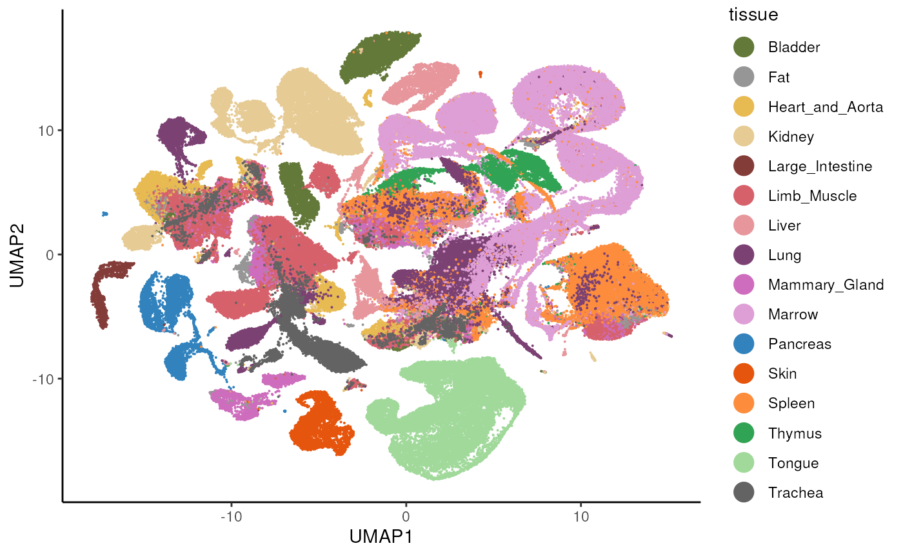
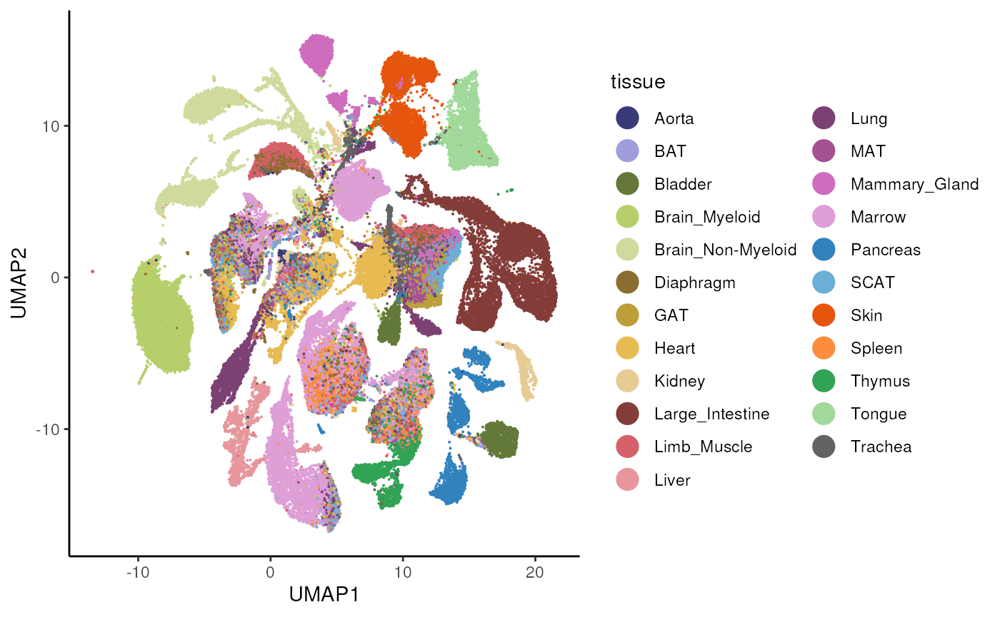

vignettes/TabulaMurisSenisData.Rmd
TabulaMurisSenisData.Rmd
library(SingleCellExperiment)
library(TabulaMurisSenisData)
library(ggplot2)This package provides access to the processed bulk and single-cell RNA-seq data from the Tabula Muris Senis data set (Schaum et al. 2019; Tabula Muris Consortium 2020). The processed bulk RNA-seq data was downloaded from GEO (accession number GSE132040). The single-cell data (droplet and FACS) was obtained from FigShare (see below for links). All data sets are provided as SingleCellExperiment objects for easy access and use within the Bioconductor ecosystem.
The bulk RNA-seq data can be accessed via the TabulaMurisSenisBulk() function. By setting the argument infoOnly to TRUE, we can get information about the size of the data set before downloading it.
tmp <- TabulaMurisSenisBulk(infoOnly = TRUE)
#> snapshotDate(): 2021-10-18
#> Total download size: 59.8 MiB
tms_bulk <- TabulaMurisSenisBulk()
#> snapshotDate(): 2021-10-18
#> see ?TabulaMurisSenisData and browseVignettes('TabulaMurisSenisData') for documentation
#> loading from cache
#> see ?TabulaMurisSenisData and browseVignettes('TabulaMurisSenisData') for documentation
#> loading from cache
#> see ?TabulaMurisSenisData and browseVignettes('TabulaMurisSenisData') for documentation
#> loading from cache
tms_bulk
#> class: SingleCellExperiment
#> dim: 54352 947
#> metadata(0):
#> assays(1): counts
#> rownames(54352): 0610005C13Rik 0610006L08Rik ... n-TSaga9 n-TStga1
#> rowData names(8): source type ... havana_gene tag
#> colnames(947): A1_384Bulk_Plate1_S1 A1_384Bulk_Plate3_S1 ...
#> P9_384Bulk_Plate2_S369 P9_384Bulk_Plate3_S369
#> colData names(19): Sample name title ... __alignment_not_unique organ
#> reducedDimNames(0):
#> mainExpName: NULL
#> altExpNames(0):We list the available tissues.
The data files for the droplet single-cell RNA-seq data were downloaded from FigShare:
We list the available tissues.
listTabulaMurisSenisTissues(dataset = "Droplet")
#> [1] "All" "Large_Intestine" "Pancreas" "Trachea"
#> [5] "Skin" "Fat" "Thymus" "Liver"
#> [9] "Heart_and_Aorta" "Mammary_Gland" "Bladder" "Lung"
#> [13] "Kidney" "Limb_Muscle" "Spleen" "Tongue"
#> [17] "Marrow"As for the bulk data, we can print the size of the data set before downloading it.
tmp <- TabulaMurisSenisDroplet(tissues = "All", infoOnly = TRUE)
#> snapshotDate(): 2021-10-18
#> Total download size (All): 709.0 MiB
tms_droplet <- TabulaMurisSenisDroplet(tissues = "All")
#> snapshotDate(): 2021-10-18
#> see ?TabulaMurisSenisData and browseVignettes('TabulaMurisSenisData') for documentation
#> loading from cache
#> require("rhdf5")
#> see ?TabulaMurisSenisData and browseVignettes('TabulaMurisSenisData') for documentation
#> loading from cache
#> see ?TabulaMurisSenisData and browseVignettes('TabulaMurisSenisData') for documentation
#> loading from cache
#> see ?TabulaMurisSenisData and browseVignettes('TabulaMurisSenisData') for documentation
#> loading from cache
#> see ?TabulaMurisSenisData and browseVignettes('TabulaMurisSenisData') for documentation
#> loading from cache
tms_droplet
#> $All
#> class: SingleCellExperiment
#> dim: 20138 245389
#> metadata(0):
#> assays(1): counts
#> rownames(20138): Xkr4 Rp1 ... Sly Erdr1
#> rowData names(6): n_cells means ... highly_variable varm
#> colnames(245389): AAACCTGCAGGGTACA-1-0-0-0 AAACCTGCAGTAAGCG-1-0-0-0 ...
#> 10X_P8_15_TTTGTCATCGGCTTGG-1 10X_P8_15_TTTGTCATCTTGTTTG-1
#> colData names(15): age cell ... louvain leiden
#> reducedDimNames(2): PCA UMAP
#> mainExpName: NULL
#> altExpNames(0):We plot the UMAP of the entire data set and color by tissue, to re-create the plot from here.
# tissue colors
tissue_cols <- c(Pancreas = "#3182bd", Thymus = "#31a354",
Trachea = "#636363", Bladder = "#637939",
Lung = "#7b4173", Large_Intestine = "#843c39",
Fat = "#969696", Tongue = "#a1d99b",
Mammary_Gland = "#ce6dbd", Limb_Muscle = "#d6616b",
Marrow = "#de9ed6", Skin = "#e6550d",
Liver = "#e7969c", Heart_and_Aorta = "#e7ba52",
Kidney = "#e7cb94", Spleen = "#fd8d3c")
# get dataset with all tissues
se <- tms_droplet$All
se
#> class: SingleCellExperiment
#> dim: 20138 245389
#> metadata(0):
#> assays(1): counts
#> rownames(20138): Xkr4 Rp1 ... Sly Erdr1
#> rowData names(6): n_cells means ... highly_variable varm
#> colnames(245389): AAACCTGCAGGGTACA-1-0-0-0 AAACCTGCAGTAAGCG-1-0-0-0 ...
#> 10X_P8_15_TTTGTCATCGGCTTGG-1 10X_P8_15_TTTGTCATCTTGTTTG-1
#> colData names(15): age cell ... louvain leiden
#> reducedDimNames(2): PCA UMAP
#> mainExpName: NULL
#> altExpNames(0):
# prepare data set for ggplot
ds <- as.data.frame(reducedDim(se, "UMAP"))
ds <- cbind(ds, tissue = colData(se)$tissue)
head(ds)
#> UMAP1 UMAP2 tissue
#> AAACCTGCAGGGTACA-1-0-0-0 5.5556602 -10.160711 Tongue
#> AAACCTGCAGTAAGCG-1-0-0-0 2.9584570 -14.145093 Tongue
#> AAACCTGTCATTATCC-1-0-0-0 3.1235533 -14.481063 Tongue
#> AAACGGGGTACAGTGG-1-0-0-0 1.5939721 -14.062417 Tongue
#> AAACGGGGTCTTCTCG-1-0-0-0 0.5233619 -8.997872 Tongue
#> AAAGATGAGCTATGCT-1-0-0-0 1.0210617 -14.642970 Tongue
# plot
ggplot(ds, aes(x = UMAP1, y = UMAP2, color = tissue)) +
geom_point(size = 0.05) +
scale_color_manual(values = tissue_cols) +
theme_classic() +
guides(colour = guide_legend(override.aes = list(size = 5)))
The data files for the FACS single-cell RNA-seq data were downloaded from FigShare:
We list the available tissues.
listTabulaMurisSenisTissues(dataset = "FACS")
#> [1] "All" "Aorta" "Kidney"
#> [4] "Diaphragm" "BAT" "Spleen"
#> [7] "Limb_Muscle" "Liver" "MAT"
#> [10] "Thymus" "Trachea" "GAT"
#> [13] "SCAT" "Bladder" "Lung"
#> [16] "Mammary_Gland" "Pancreas" "Skin"
#> [19] "Tongue" "Brain_Non-Myeloid" "Heart"
#> [22] "Brain_Myeloid" "Large_Intestine" "Marrow"Also here, we can print the size of the data set before downloading it.
tmp <- TabulaMurisSenisFACS(tissues = "All", infoOnly = TRUE)
#> snapshotDate(): 2021-10-18
#> Total download size (All): 697.0 MiB
tms_facs <- TabulaMurisSenisFACS(tissues = "All")
#> snapshotDate(): 2021-10-18
#> see ?TabulaMurisSenisData and browseVignettes('TabulaMurisSenisData') for documentation
#> loading from cache
#> see ?TabulaMurisSenisData and browseVignettes('TabulaMurisSenisData') for documentation
#> loading from cache
#> see ?TabulaMurisSenisData and browseVignettes('TabulaMurisSenisData') for documentation
#> loading from cache
#> see ?TabulaMurisSenisData and browseVignettes('TabulaMurisSenisData') for documentation
#> loading from cache
#> see ?TabulaMurisSenisData and browseVignettes('TabulaMurisSenisData') for documentation
#> loading from cache
tms_facs
#> $All
#> class: SingleCellExperiment
#> dim: 22966 110824
#> metadata(0):
#> assays(1): counts
#> rownames(22966): 0610005C13Rik 0610007C21Rik ... Zzef1 Zzz3
#> rowData names(6): n_cells means ... highly_variable varm
#> colnames(110824): A10_B000497_B009023_S10.mm10-plus-0-0
#> A10_B000756_B007446_S10.mm10-plus-0-0 ... P9_B000492_S153.mus-2-1
#> P9_MAA001700_S105.mus-2-1
#> colData names(15): FACS.selection age ... louvain leiden
#> reducedDimNames(2): PCA UMAP
#> mainExpName: NULL
#> altExpNames(0):We plot the UMAP of the entire data set and color by tissue, to re-create the plot from here.
# tissue colors
tissue_cols <- c(Skin = "#e6550d", Pancreas = "#3182bd",
Limb_Muscle = "#d6616b", Heart = "#e7ba52",
Spleen = "#fd8d3c", Diaphragm = "#8c6d31",
Trachea = "#636363", Tongue = "#a1d99b",
Thymus = "#31a354", `Brain_Non-Myeloid` = "#cedb9c",
Brain_Myeloid = "#b5cf6b", Bladder = "#637939",
Large_Intestine = "#843c39", BAT = "#9c9ede",
GAT = "#bd9e39", MAT = "#a55194", SCAT = "#6baed6",
Lung = "#7b4173", Liver = "#e7969c",
Marrow = "#de9ed6", Kidney = "#e7cb94",
Aorta = "#393b79", Mammary_Gland = "#ce6dbd")
# get dataset with all tissues
se <- tms_facs$All
se
#> class: SingleCellExperiment
#> dim: 22966 110824
#> metadata(0):
#> assays(1): counts
#> rownames(22966): 0610005C13Rik 0610007C21Rik ... Zzef1 Zzz3
#> rowData names(6): n_cells means ... highly_variable varm
#> colnames(110824): A10_B000497_B009023_S10.mm10-plus-0-0
#> A10_B000756_B007446_S10.mm10-plus-0-0 ... P9_B000492_S153.mus-2-1
#> P9_MAA001700_S105.mus-2-1
#> colData names(15): FACS.selection age ... louvain leiden
#> reducedDimNames(2): PCA UMAP
#> mainExpName: NULL
#> altExpNames(0):
# prepare data set for ggplot
ds <- as.data.frame(reducedDim(se, "UMAP"))
ds <- cbind(ds, tissue = colData(se)$tissue)
head(ds)
#> UMAP1 UMAP2 tissue
#> A10_B000497_B009023_S10.mm10-plus-0-0 9.917321 10.959189 Skin
#> A10_B000756_B007446_S10.mm10-plus-0-0 12.558255 -14.239025 Pancreas
#> A10_B000802_B009022_S10.mm10-plus-0-0 10.272095 9.065876 Skin
#> A10_B000927_B007456_S10.mm10-plus-0-0 1.349453 7.980347 Limb_Muscle
#> A10_B001361_B007505_S10.mm10-plus-0-0 4.771871 -7.167833 Heart
#> A10_B002452_B009020_S10.mm10-plus-0-0 3.218485 -8.522328 Spleen
# plot
ggplot(ds, aes(x = UMAP1, y = UMAP2, color = tissue)) +
geom_point(size = 0.05) +
scale_color_manual(values = tissue_cols) +
theme_classic() +
guides(colour = guide_legend(override.aes = list(size = 5)))
iSEE
The Tabula Muris Senis datasets are provided in the form of SingleCellExperiment objects.
A natural companion to this data structure is the iSEE package, which can be used for interactive and reproducible data exploration.
Any analysis steps should be performed in advance before calling iSEE, and since these datasets can be quite big, the operations can be time consuming, and/or require a considerable amount of resources.
sce_all_facs <- TabulaMurisSenisFACS(tissues = "All", processedCounts = TRUE)$All
#> snapshotDate(): 2021-10-18
#> see ?TabulaMurisSenisData and browseVignettes('TabulaMurisSenisData') for documentation
#> loading from cache
#> see ?TabulaMurisSenisData and browseVignettes('TabulaMurisSenisData') for documentation
#> loading from cache
#> see ?TabulaMurisSenisData and browseVignettes('TabulaMurisSenisData') for documentation
#> loading from cache
#> see ?TabulaMurisSenisData and browseVignettes('TabulaMurisSenisData') for documentation
#> loading from cache
#> see ?TabulaMurisSenisData and browseVignettes('TabulaMurisSenisData') for documentation
#> loading from cache
#> see ?TabulaMurisSenisData and browseVignettes('TabulaMurisSenisData') for documentation
#> loading from cache
sce_all_facs
#> class: SingleCellExperiment
#> dim: 22966 110824
#> metadata(0):
#> assays(2): counts logcounts
#> rownames(22966): 0610005C13Rik 0610007C21Rik ... Zzef1 Zzz3
#> rowData names(6): n_cells means ... highly_variable varm
#> colnames(110824): A10_B000497_B009023_S10.mm10-plus-0-0
#> A10_B000756_B007446_S10.mm10-plus-0-0 ... P9_B000492_S153.mus-2-1
#> P9_MAA001700_S105.mus-2-1
#> colData names(15): FACS.selection age ... louvain leiden
#> reducedDimNames(2): PCA UMAP
#> mainExpName: NULL
#> altExpNames(0):We can see that the sce_all_facs contains both raw and processed counts (in the assays slots counts and logcounts), but also the PCA and UMAP embeddings as provided in the original publication.
assayNames(sce_all_facs)
#> [1] "counts" "logcounts"
reducedDimNames(sce_all_facs)
#> [1] "PCA" "UMAP"If desired, additional processing steps can be performed on the sce_all_facs - e.g., storing signature scores (computed via AUCell) as colData elements.
Once these steps are completed, launching iSEE is as easy as
This will launch iSEE with a standard default set of panels.
Optionally, we can configure the initial set to start the app in the desired configuration - below, we show how to start iSEE with:
ReducedDimensionPlot displaying the UMAP, colored by the expression of a feature;RowDataTable, for selecting a feature to be transmitted to the other panels (showing all genes whose name contains “Col1”);FeatureAssayPlot, for showing the expression of the gene selected in the RowDataTable, split by tissue.
initial <- list()
################################################################################
# (Compact) Settings for Reduced dimension plot 1
################################################################################
initial[["ReducedDimensionPlot1"]] <- new(
"ReducedDimensionPlot",
DataBoxOpen = TRUE,
Type = "UMAP",
VisualBoxOpen = TRUE,
ColorBy = "Feature name",
ColorByFeatureName = "Col1a1",
ColorByFeatureSource = "RowDataTable1",
ColorByFeatureDynamicSource = FALSE
)
################################################################################
# (Compact) Settings for Row data table 1
################################################################################
initial[["RowDataTable1"]] <- new(
"RowDataTable",
Selected = "Col1a1",
Search = "Col1"
)
################################################################################
# (Compact) Settings for Feature assay plot 1
################################################################################
initial[["FeatureAssayPlot1"]] <- new(
"FeatureAssayPlot",
DataBoxOpen = TRUE,
Assay = "logcounts",
XAxis = "Column data",
XAxisColumnData = "tissue",
YAxisFeatureName = "Col1a1",
YAxisFeatureSource = "RowDataTable1"
)
initial <- list()
################################################################################
# Settings for Reduced dimension plot 1
################################################################################
initial[["ReducedDimensionPlot1"]] <- new("ReducedDimensionPlot", Type = "UMAP", XAxis = 1L, YAxis = 2L,
FacetRowByColData = "FACS.selection", FacetColumnByColData = "FACS.selection",
ColorByColumnData = "FACS.selection", ColorByFeatureNameAssay = "logcounts",
ColorBySampleNameColor = "#FF0000", ShapeByColumnData = "FACS.selection",
SizeByColumnData = "n_genes", FacetRowBy = "None", FacetColumnBy = "None",
ColorBy = "Feature name", ColorByDefaultColor = "#000000",
ColorByFeatureName = "Col1a1", ColorByFeatureSource = "RowDataTable1",
ColorByFeatureDynamicSource = FALSE, ColorBySampleName = "A10_B000497_B009023_S10.mm10-plus-0-0",
ColorBySampleSource = "---", ColorBySampleDynamicSource = FALSE,
ShapeBy = "None", SizeBy = "None", SelectionAlpha = 0.1,
ZoomData = numeric(0), BrushData = list(), VisualBoxOpen = TRUE,
VisualChoices = "Color", ContourAdd = FALSE, ContourColor = "#0000FF",
PointSize = 1, PointAlpha = 1, Downsample = FALSE, DownsampleResolution = 200,
CustomLabels = FALSE, CustomLabelsText = "A10_B000497_B009023_S10.mm10-plus-0-0",
FontSize = 1, LegendPointSize = 1, LegendPosition = "Bottom",
HoverInfo = TRUE, LabelCenters = FALSE, LabelCentersBy = "FACS.selection",
LabelCentersColor = "#000000", VersionInfo = list(iSEE = structure(list(
c(2L, 5L, 1L)), class = c("package_version", "numeric_version"
))), PanelId = c(ReducedDimensionPlot = 1L), PanelHeight = 500L,
PanelWidth = 4L, SelectionBoxOpen = FALSE, RowSelectionSource = "---",
ColumnSelectionSource = "---", DataBoxOpen = FALSE, RowSelectionDynamicSource = FALSE,
ColumnSelectionDynamicSource = FALSE, RowSelectionRestrict = FALSE,
ColumnSelectionRestrict = FALSE, SelectionHistory = list())
################################################################################
# Settings for Row data table 1
################################################################################
initial[["RowDataTable1"]] <- new("RowDataTable", Selected = "Col1a1", Search = "Col1", SearchColumns = c("",
"", "", "", ""), HiddenColumns = character(0), VersionInfo = list(
iSEE = structure(list(c(2L, 5L, 1L)), class = c("package_version",
"numeric_version"))), PanelId = c(RowDataTable = 1L), PanelHeight = 500L,
PanelWidth = 4L, SelectionBoxOpen = FALSE, RowSelectionSource = "---",
ColumnSelectionSource = "---", DataBoxOpen = FALSE, RowSelectionDynamicSource = FALSE,
ColumnSelectionDynamicSource = FALSE, RowSelectionRestrict = FALSE,
ColumnSelectionRestrict = FALSE, SelectionHistory = list())
################################################################################
# Settings for Feature assay plot 1
################################################################################
initial[["FeatureAssayPlot1"]] <- new("FeatureAssayPlot", Assay = "logcounts", XAxis = "Column data",
XAxisColumnData = "tissue", XAxisFeatureName = "0610005C13Rik",
XAxisFeatureSource = "---", XAxisFeatureDynamicSource = FALSE,
YAxisFeatureName = "Col1a1", YAxisFeatureSource = "RowDataTable1",
YAxisFeatureDynamicSource = FALSE, FacetRowByColData = "FACS.selection",
FacetColumnByColData = "FACS.selection", ColorByColumnData = "age",
ColorByFeatureNameAssay = "logcounts", ColorBySampleNameColor = "#FF0000",
ShapeByColumnData = "FACS.selection", SizeByColumnData = "n_genes",
FacetRowBy = "None", FacetColumnBy = "None", ColorBy = "None",
ColorByDefaultColor = "#000000", ColorByFeatureName = "0610005C13Rik",
ColorByFeatureSource = "---", ColorByFeatureDynamicSource = FALSE,
ColorBySampleName = "A10_B000497_B009023_S10.mm10-plus-0-0",
ColorBySampleSource = "---", ColorBySampleDynamicSource = FALSE,
ShapeBy = "None", SizeBy = "None", SelectionAlpha = 0.1,
ZoomData = numeric(0), BrushData = list(), VisualBoxOpen = FALSE,
VisualChoices = "Color", ContourAdd = FALSE, ContourColor = "#0000FF",
PointSize = 1, PointAlpha = 1, Downsample = FALSE, DownsampleResolution = 200,
CustomLabels = FALSE, CustomLabelsText = "A10_B000497_B009023_S10.mm10-plus-0-0",
FontSize = 1, LegendPointSize = 1, LegendPosition = "Bottom",
HoverInfo = TRUE, LabelCenters = FALSE, LabelCentersBy = "FACS.selection",
LabelCentersColor = "#000000", VersionInfo = list(iSEE = structure(list(
c(2L, 5L, 1L)), class = c("package_version", "numeric_version"
))), PanelId = c(FeatureAssayPlot = 1L), PanelHeight = 500L,
PanelWidth = 4L, SelectionBoxOpen = FALSE, RowSelectionSource = "---",
ColumnSelectionSource = "---", DataBoxOpen = FALSE, RowSelectionDynamicSource = FALSE,
ColumnSelectionDynamicSource = FALSE, RowSelectionRestrict = FALSE,
ColumnSelectionRestrict = FALSE, SelectionHistory = list())
initialiSEE can then be launched with the following command:
iSEE(sce_all_facs, initial = initial)Screenshot of the iSEE app running on the FACS single cell dataset
Note that these lengthy configuration options can be readily exported by clicking on the dedicated button “Display panel settings” in iSEE - we can do that anytime after we are done designing the configuration using the app interface.
sessionInfo()
#> R version 4.1.1 (2021-08-10)
#> Platform: x86_64-pc-linux-gnu (64-bit)
#> Running under: Ubuntu 20.04.3 LTS
#>
#> Matrix products: default
#> BLAS/LAPACK: /usr/lib/x86_64-linux-gnu/openblas-pthread/libopenblasp-r0.3.8.so
#>
#> locale:
#> [1] LC_CTYPE=en_US.UTF-8 LC_NUMERIC=C
#> [3] LC_TIME=en_US.UTF-8 LC_COLLATE=en_US.UTF-8
#> [5] LC_MONETARY=en_US.UTF-8 LC_MESSAGES=C
#> [7] LC_PAPER=en_US.UTF-8 LC_NAME=C
#> [9] LC_ADDRESS=C LC_TELEPHONE=C
#> [11] LC_MEASUREMENT=en_US.UTF-8 LC_IDENTIFICATION=C
#>
#> attached base packages:
#> [1] stats4 stats graphics grDevices utils datasets methods
#> [8] base
#>
#> other attached packages:
#> [1] iSEE_2.5.3 rhdf5_2.37.4
#> [3] ggplot2_3.3.5 TabulaMurisSenisData_1.1.0
#> [5] SingleCellExperiment_1.15.2 SummarizedExperiment_1.23.5
#> [7] Biobase_2.53.0 GenomicRanges_1.45.0
#> [9] GenomeInfoDb_1.29.10 IRanges_2.27.2
#> [11] S4Vectors_0.31.5 BiocGenerics_0.39.2
#> [13] MatrixGenerics_1.5.4 matrixStats_0.61.0
#> [15] BiocStyle_2.21.4
#>
#> loaded via a namespace (and not attached):
#> [1] circlize_0.4.13 AnnotationHub_3.1.7
#> [3] BiocFileCache_2.1.1 systemfonts_1.0.3
#> [5] igraph_1.2.7 shinydashboard_0.7.2
#> [7] splines_4.1.1 digest_0.6.28
#> [9] foreach_1.5.1 htmltools_0.5.2
#> [11] gdata_2.18.0 fansi_0.5.0
#> [13] magrittr_2.0.1 memoise_2.0.0
#> [15] cluster_2.1.2 doParallel_1.0.16
#> [17] ComplexHeatmap_2.9.4 Biostrings_2.61.2
#> [19] pkgdown_1.9000.9000.9000 colorspace_2.0-2
#> [21] blob_1.2.2 rappdirs_0.3.3
#> [23] ggrepel_0.9.1 textshaping_0.3.6
#> [25] xfun_0.27 dplyr_1.0.7
#> [27] crayon_1.4.1 RCurl_1.98-1.5
#> [29] jsonlite_1.7.2 iterators_1.0.13
#> [31] glue_1.4.2 gtable_0.3.0
#> [33] zlibbioc_1.39.0 XVector_0.33.0
#> [35] GetoptLong_1.0.5 DelayedArray_0.19.4
#> [37] Rhdf5lib_1.15.2 shape_1.4.6
#> [39] HDF5Array_1.21.0 scales_1.1.1
#> [41] DBI_1.1.1 miniUI_0.1.1.1
#> [43] Rcpp_1.0.7 viridisLite_0.4.0
#> [45] xtable_1.8-4 clue_0.3-60
#> [47] bit_4.0.4 DT_0.19
#> [49] htmlwidgets_1.5.4 httr_1.4.2
#> [51] RColorBrewer_1.1-2 shinyAce_0.4.1
#> [53] ellipsis_0.3.2 pkgconfig_2.0.3
#> [55] farver_2.1.0 sass_0.4.0
#> [57] dbplyr_2.1.1 utf8_1.2.2
#> [59] tidyselect_1.1.1 labeling_0.4.2
#> [61] rlang_0.99.0.9000 later_1.3.0
#> [63] AnnotationDbi_1.55.2 munsell_0.5.0
#> [65] BiocVersion_3.14.0 tools_4.1.1
#> [67] cachem_1.0.6 cli_3.0.1
#> [69] generics_0.1.1 RSQLite_2.2.8
#> [71] ExperimentHub_2.1.4 rintrojs_0.3.0
#> [73] evaluate_0.14 stringr_1.4.0
#> [75] fastmap_1.1.0 yaml_2.2.1
#> [77] ragg_1.1.3 knitr_1.36
#> [79] bit64_4.0.5 fs_1.5.0
#> [81] purrr_0.3.4 KEGGREST_1.33.0
#> [83] nlme_3.1-153 mime_0.12
#> [85] compiler_4.1.1 filelock_1.0.2
#> [87] curl_4.3.2 png_0.1-7
#> [89] interactiveDisplayBase_1.31.2 tibble_3.1.5
#> [91] bslib_0.3.1 stringi_1.7.5
#> [93] highr_0.9 desc_1.4.0
#> [95] lattice_0.20-45 Matrix_1.3-4
#> [97] shinyjs_2.0.0 vctrs_0.3.8
#> [99] pillar_1.6.4 lifecycle_1.0.1
#> [101] rhdf5filters_1.5.0 BiocManager_1.30.16
#> [103] jquerylib_0.1.4 GlobalOptions_0.1.2
#> [105] bitops_1.0-7 httpuv_1.6.3
#> [107] R6_2.5.1 bookdown_0.24
#> [109] promises_1.2.0.1 vipor_0.4.5
#> [111] codetools_0.2-18 colourpicker_1.1.1
#> [113] gtools_3.9.2 assertthat_0.2.1
#> [115] rprojroot_2.0.2 rjson_0.2.20
#> [117] shinyWidgets_0.6.2 withr_2.4.2
#> [119] GenomeInfoDbData_1.2.7 mgcv_1.8-38
#> [121] parallel_4.1.1 grid_4.1.1
#> [123] rmarkdown_2.11 shiny_1.7.1